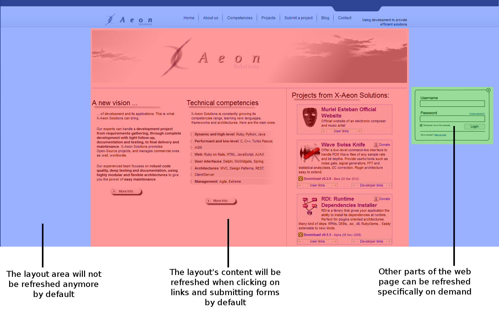

rails-ajax
Auto-ajaxify your Rails app!
Without rails-ajax
mysite.com/

With rails-ajax
mysite.com/
Stop sending and loading unchanged HTML/CSS/Javascript when you don't need it!
- Automatic, unobtrusive and seamless Ajax integration in your Rails application without a single line of code.
- Handles history and bookmarking: whether Javascript is enabled or not in the browser, URL are following the links.
- Adapts to normal links and form buttons too!
- Selectively refresh some elements using Rails partials.
- Handles Rails flash messages.
- Automatically handles redirections.
- Provide user callbacks to better control the Ajax flow.
- Executes Javascript from the updated view if needed.
- Can be deactivated on a per-link basis.



Installation
Add rails-ajax in your Gemfile:
gem 'rails-ajax'
Then install it:
bundle install
Usage
1. Generate rails-ajax configuration files
rake rails-ajax:install
2. Make sure your Rails layout embeds your view in a selectable container
<%= render :partial => 'menu' %>
<%= flash[:notice] %>
<%= flash[:error] %>
<%= flash[:alert] %>
<%= yield %>
3. Configure rails-ajax and set the container used for your views
# RailsAjax configuration
RailsAjax.configure do
# Enable or disable RailsAjax.
# If disabled, RailsAjax methods will be useless, and corresponding JavaScript will be removed.
# When changing this switch, you have to:
# * Precompile your assets in production mode
# * Restart your server
enable true
# Set the default main container that will receive the result of Ajax requests.
# This container will get what is rendered by default when render is called.
main_container 'div#Content'
# Set the containers that will receive Rails' flash messages.
# Use these if those containers are part of your layout and will not be refreshed by each Ajax call. In this case RailsAjax will still refresh them.
# If not set for a given flash message type, you have to return the corresponding flash yourself in each Ajax's response.
flash_containers(
:notice => '#FlashNotice',
:error => '#FlashError',
:alert => '#FlashAlert'
)
# Activate debugging alerts in the JS code.
# This will pop plenty of JS dialogs at each stage of RailsAjax calls, useful to better debug what is going wrong.
# When changing this switch, you have to:
# * Precompile your assets in production mode
# * Restart your server
debug_alerts false
end
4. Add rails-ajax Javascript libraries to your assets
//= require jquery //= require jquery_ujs // // RailsAjax //= require jquery.history //= require jquery.rails-ajax //= require RailsAjax-Config //
5. Restart your server
Refresh some parts of your layout on demand
Controllers can use the refresh_dom_with_partial method to specify a CSS selector to be updated with some partial name:
class HomeController < ApplicationController
def login
# Refresh the menu in the layout
refresh_dom_with_partial('div#Menu', 'menu')
# Continue with the default rendering
end
end
Links
Contact
Contributions, questions, jokes? Send them to Muriel!